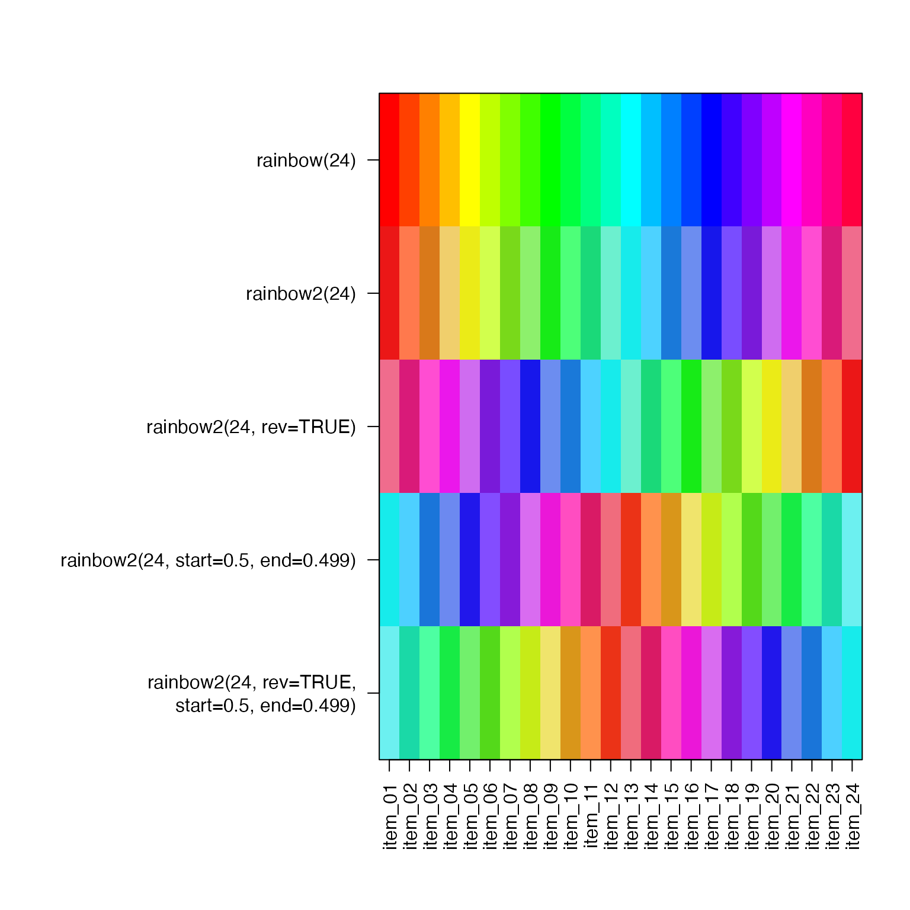

Simple rainbow palette replacement using variable saturation and vibrance
Arguments
- n
integernumber of colors requested- s, v
numericvector of values to recycle as saturation and vibrance, respectively. The purpose is to improve visual distinction between adjacent and nearby colors in the color wheel.- ...
additional arguments are passed to
grDevices::rainbow():start,endto control the starting and ending hue[0,1],alphafor alpha opacity, default NULL adds no alpha,revto reverse the color order.
See also
Other jam color functions:
alpha2col(),
applyCLrange(),
col2alpha(),
col2hcl(),
col2hsl(),
col2hsv(),
color2gradient(),
fixYellow(),
fixYellowHue(),
getColorRamp(),
hcl2col(),
hsl2col(),
hsv2col(),
isColor(),
kable_coloring(),
makeColorDarker(),
rgb2col(),
setCLranges(),
setTextContrastColor(),
showColors(),
unalpha(),
warpRamp()
Examples
showColors(list(
`rainbow(24)`=grDevices::rainbow(24),
`rainbow2(24)`=rainbow2(24),
`rainbow2(24, rev=TRUE)`=rainbow2(24, rev=TRUE),
`rainbow2(24, start=0.5, end=0.499)`=rainbow2(24,
start=0.5, end=0.5-1e-5),
`rainbow2(24, rev=TRUE,\nstart=0.5, end=0.499)`=rainbow2(24,
rev=TRUE, start=0.5, end=0.5-1e-5)))
